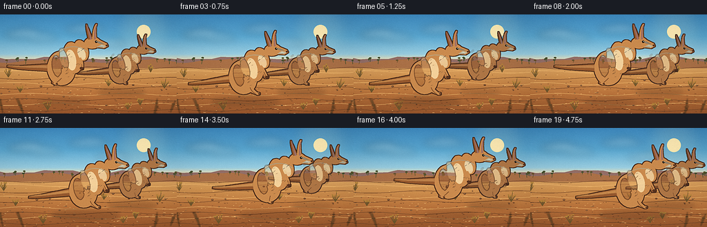
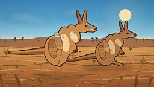
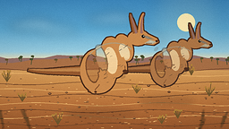
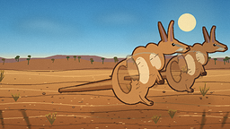
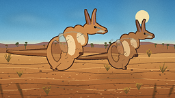
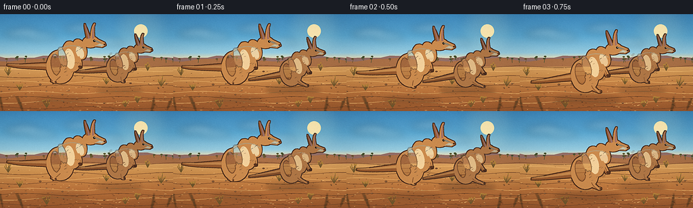

CODING AGENTS AS PIXEL WORLD MODELS
traex/DeepSeek-V4.1-Flash · instance_preservation_0008
点击播放 · 原生 RGB 像素
逐轮保存的候选
回放视频、检查图与代码变化。
每份候选均可单独播放。实际图片检查记录在下方工具轨迹中。
候选 01播放与检查图
点击播放 · 原生 RGB 像素

展开代码变化
--- 上一保存版本
+++ 本次保存版本
@@ -0,0 +1,664 @@
+from __future__ import annotations
+
+import math
+import random
+from pathlib import Path
+
+import numpy as np
+from PIL import Image, ImageDraw, ImageFilter
+
+import artifact_io
+
+
+WIDTH = 256
+HEIGHT = 144
+FRAMES = 20
+FPS = 4.0
+SUPERSAMPLE = 4
+RW = WIDTH * SUPERSAMPLE
+RH = HEIGHT * SUPERSAMPLE
+HORIZON = 66.0
+
+CASE_DIR = Path(__file__).resolve().parent
+
+
+def rgb(color: tuple[int, int, int], alpha: int = 255) -> tuple[int, int, int, int]:
+ return color[0], color[1], color[2], alpha
+
+
+def mix(a: tuple[int, int, int], b: tuple[int, int, int], t: float) -> tuple[int, int, int]:
+ return tuple(round(a[i] + (b[i] - a[i]) * t) for i in range(3))
+
+
+def sample_gradient(stops: list[tuple[float, tuple[int, int, int]]], t: float) -> tuple[int, int, int]:
+ for index in range(1, len(stops)):
+ left_t, left_color = stops[index - 1]
+ right_t, right_color = stops[index]
+ if t <= right_t:
+ local = (t - left_t) / max(1e-8, right_t - left_t)
+ return mix(left_color, right_color, max(0.0, min(1.0, local)))
+ return stops[-1][1]
+
+
+def make_background_base() -> Image.Image:
+ stops = [
+ (0.00, (62, 139, 193)),
+ (0.22, (91, 169, 211)),
+ (0.40, (153, 205, 224)),
+ (0.455, (222, 221, 190)),
+ (0.472, (247, 209, 153)),
+ (0.49, (224, 171, 103)),
+ (0.63, (207, 145, 79)),
+ (0.80, (187, 116, 60)),
+ (1.00, (155, 88, 45)),
+ ]
+ array = np.empty((RH, RW, 3), dtype=np.uint8)
+ for y in range(RH):
+ color = sample_gradient(stops, y / max(1, RH - 1))
+ array[y, :, :] = color
+
+ # A warm atmospheric band keeps the horizon from reading as a hard stripe.
+ y0 = int((HORIZON - 8) * SUPERSAMPLE)
+ y1 = int((HORIZON + 5) * SUPERSAMPLE)
+ band = np.linspace(0.0, 1.0, max(1, y1 - y0))[:, None, None]
+ haze = np.array([247, 213, 164], dtype=np.float32)[None, None, :]
+ region = array[y0:y1].astype(np.float32)
+ region = region * (1.0 - 0.13 * band) + haze * (0.13 * band)
+ array[y0:y1] = np.clip(region, 0, 255).astype(np.uint8)
+ return Image.fromarray(array, "RGB").convert("RGBA")
+
+
+def bezier_points(
+ p0: tuple[float, float],
+ p1: tuple[float, float],
+ p2: tuple[float, float],
+ p3: tuple[float, float],
+ count: int = 36,
+) -> list[tuple[float, float]]:
+ points = []
+ for index in range(count):
+ t = index / (count - 1)
+ u = 1.0 - t
+ x = u**3 * p0[0] + 3 * u**2 * t * p1[0] + 3 * u * t**2 * p2[0] + t**3 * p3[0]
+ y = u**3 * p0[1] + 3 * u**2 * t * p1[1] + 3 * u * t**2 * p2[1] + t**3 * p3[1]
+ points.append((x, y))
+ return points
+
+
+def draw_tapered_curve(
+ draw: ImageDraw.ImageDraw,
+ points: list[tuple[float, float]],
+ widths: list[float],
+ fill: tuple[int, int, int, int],
+) -> None:
+ left = []
+ right = []
+ for index, (x, y) in enumerate(points):
+ if index == 0:
+ dx = points[1][0] - x
+ dy = points[1][1] - y
+ elif index == len(points) - 1:
+ dx = x - points[index - 1][0]
+ dy = y - points[index - 1][1]
+ else:
+ dx = points[index + 1][0] - points[index - 1][0]
+ dy = points[index + 1][1] - points[index - 1][1]
+ length = math.hypot(dx, dy) or 1.0
+ nx = -dy / length
+ ny = dx / length
+ half = widths[index] * 0.5
+ left.append((x + nx * half, y + ny * half))
+ right.append((x - nx * half, y - ny * half))
+ draw.polygon(left + list(reversed(right)), fill=fill)
+
+
+def rotated_ellipse_points(
+ center: tuple[float, float],
+ rx: float,
+ ry: float,
+ angle_degrees: float,
+ count: int = 72,
+) -> list[tuple[float, float]]:
+ angle = math.radians(angle_degrees)
+ ca, sa = math.cos(angle), math.sin(angle)
+ points = []
+ for index in range(count):
+ theta = 2.0 * math.pi * index / count
+ x = rx * math.cos(theta)
+ y = ry * math.sin(theta)
+ points.append((center[0] + x * ca - y * sa, center[1] + x * sa + y * ca))
+ return points
+
+
+def make_kangaroo(
+ scale: float,
+ palette: dict[str, tuple[int, int, int]],
+ phase: float,
+ seed: int,
+) -> tuple[Image.Image, tuple[float, float], float]:
+ k = scale * SUPERSAMPLE
+ layer_w = int(math.ceil(280 * k))
+ layer_h = int(math.ceil(185 * k))
+ anchor_x = 145.0 * k
+ anchor_y = 155.0 * k
+ color_layer = Image.new("RGBA", (layer_w, layer_h), (0, 0, 0, 0))
+ draw = ImageDraw.Draw(color_layer, "RGBA")
+
+ def p(x: float, y: float) -> tuple[float, float]:
+ return anchor_x + x * k, anchor_y + y * k
+
+ def sz(value: float) -> float:
+ return max(1.0, value * k)
+
+ air = math.sin(math.pi * phase)
+ air = max(0.0, air) ** 0.85
+ crouch = max(0.0, math.cos(2.0 * math.pi * phase))
+ body_drop = 4.0 * crouch
+ rng = random.Random(seed)
+
+ base = palette["base"]
+ light = palette["light"]
+ dark = palette["dark"]
+ cream = palette["cream"]
+ inner_ear = palette["inner_ear"]
+
+ # Tail: thick at the rump, tapering into a long counterbalance.
+ tail_control = [
+ p(-11, -38 + body_drop),
+ p(-40, -31 + body_drop - 8 * air),
+ p(-78, -16 - 14 * air),
+ p(-113, -7 - 24 * air),
+ ]
+ tail_points = bezier_points(*tail_control, 42)
+ tail_widths = [sz(15.0 * (1.0 - i / 41) ** 0.72 + 1.6) for i in range(42)]
+ draw_tapered_curve(draw, tail_points, tail_widths, rgb(dark))
+ tail_inner = [(x + 0.5 * k, y - 2.0 * k) for x, y in tail_points]
+ inner_widths = [width * 0.45 for width in tail_widths]
+ draw_tapered_curve(draw, tail_inner, inner_widths, rgb(base, 165))
+
+ # Far limbs sit behind the body and are intentionally a little darker.
+ far_leg = [
+ p(-10, -39 + body_drop),
+ p(1 - 4 * air, -24 + body_drop * 0.5),
+ p(11 - 31 * air, -11 - 5 * air),
+ p(46 - 66 * air, -5 - 4 * air),
+ ]
+ far_points = bezier_points(*far_leg, 30)
+ far_widths = [sz(7.0 * (1.0 - i / 29) ** 0.35 + 2.0) for i in range(30)]
+ draw_tapered_curve(draw, far_points, far_widths, rgb(palette["far_limb"]))
+ draw.ellipse(
+ [far_points[-1][0] - sz(3.0), far_points[-1][1] - sz(2.0), far_points[-1][0] + sz(5.0), far_points[-1][1] + sz(2.0)],
+ fill=rgb(palette["far_limb"]),
+ )
+ far_arm = bezier_points(
+ p(23, -65 + body_drop),
+ p(30, -53 + body_drop),
+ p(36 - 7 * air, -45 + body_drop),
+ p(42 - 12 * air, -40 + body_drop - 2 * air),
+ 20,
+ )
+ draw.line([(round(x), round(y)) for x, y in far_arm], fill=rgb(palette["far_limb"]), width=max(1, round(sz(5.2))), joint="curve")
+ draw.ellipse(
+ [far_arm[-1][0] - sz(3.2), far_arm[-1][1] - sz(2.4), far_arm[-1][0] + sz(3.4), far_arm[-1][1] + sz(2.4)],
+ fill=rgb(palette["far_limb"]),
+ )
+
+ # Muscular haunch and torso.
+ draw.polygon(rotated_ellipse_points(p(-7, -39 + body_drop), sz(27.5), sz(33.5), -9), fill=rgb(base))
+ draw.polygon(rotated_ellipse_points(p(13, -62 + body_drop), sz(18.0), sz(31.0), -16), fill=rgb(base))
+ draw.polygon(rotated_ellipse_points(p(28, -78 + body_drop), sz(13.0), sz(21.0), -25), fill=rgb(base))
+
+ # Pale belly and chest.
+ draw.polygon(rotated_ellipse_points(p(10, -57 + body_drop), sz(9.8), sz(20.5), -15), fill=rgb(cream, 245))
+ draw.polygon(rotated_ellipse_points(p(29, -72 + body_drop), sz(7.3), sz(13.0), -27), fill=rgb(cream, 225))
+
+ # Haunch shading and a warm back highlight.
+ draw.polygon(rotated_ellipse_points(p(-16, -42 + body_drop), sz(10.5), sz(22.0), -14), fill=rgb(dark, 92))
+ draw.polygon(rotated_ellipse_points(p(-4, -58 + body_drop), sz(8.0), sz(21.0), -21), fill=rgb(light, 78))
+ back_curve = bezier_points(
+ p(-23, -63 + body_drop),
+ p(-4, -88 + body_drop),
+ p(24, -88 + body_drop),
+ p(39, -77 + body_drop),
+ 22,
+ )
+ draw.line([(round(x), round(y)) for x, y in back_curve], fill=rgb(light, 145), width=max(1, round(sz(1.7))), joint="curve")
+
+ # Head and muzzle.
+ draw.polygon(rotated_ellipse_points(p(48, -95 + body_drop), sz(16.0), sz(11.4), -11), fill=rgb(base))
+ muzzle = [
+ p(47, -102 + body_drop),
+ p(62, -102 + body_drop),
+ p(76, -97 + body_drop),
+ p(79, -92 + body_drop),
+ p(72, -87 + body_drop),
+ p(56, -87 + body_drop),
+ p(45, -91 + body_drop),
+ ]
+ draw.polygon(muzzle, fill=rgb(base))
+ draw.polygon(
+ [p(58, -88 + body_drop), p(70, -88 + body_drop), p(76, -92 + body_drop), p(66, -94 + body_drop)],
+ fill=rgb(cream, 150),
+ )
+ draw.polygon(
+ [p(50, -99 + body_drop), p(62, -99 + body_drop), p(72, -95 + body_drop), p(62, -95 + body_drop)],
+ fill=rgb(light, 95),
+ )
+
+ # Ears are separate so they keep their long, unmistakable silhouette.
+ back_ear = bezier_points(
+ p(43, -102 + body_drop),
+ p(39, -113 + body_drop),
+ p(34, -123 + body_drop),
+ p(32, -130 + body_drop),
+ 18,
+ )
+ back_widths = [sz(7.2 * (1.0 - i / 17) ** 0.7 + 1.0) for i in range(18)]
+ draw_tapered_curve(draw, back_ear, back_widths, rgb(dark))
+ draw_tapered_curve(
+ draw,
+ [(x + 1.2 * k, y + 0.6 * k) for x, y in back_ear],
+ [width * 0.42 for width in back_widths],
+ rgb(inner_ear, 190),
+ )
+ front_ear = bezier_points(
+ p(51, -103 + body_drop),
+ p(49, -116 + body_drop),
+ p(49, -127 + body_drop),
+ p(52, -133 + body_drop),
+ 18,
+ )
+ front_widths = [sz(7.4 * (1.0 - i / 17) ** 0.72 + 1.0) for i in range(18)]
+ draw_tapered_curve(draw, front_ear, front_widths, rgb(base))
+ draw_tapered_curve(
+ draw,
+ [(x + 1.1 * k, y + 0.5 * k) for x, y in front_ear],
+ [width * 0.43 for width in front_widths],
+ rgb(inner_ear, 210),
+ )
+
+ # Near hind leg and long foot.
+ near_leg = [
+ p(-2, -39 + body_drop),
+ p(10 - 5 * air, -23 + body_drop * 0.55 - 3 * air),
+ p(19 - 32 * air, -9 - 6 * air),
+ p(53 - 69 * air, -3 - 5 * air),
+ ]
+ near_points = bezier_points(*near_leg, 34)
+ near_widths = [sz(8.5 * (1.0 - i / 33) ** 0.34 + 2.0) for i in range(34)]
+ draw_tapered_curve(draw, near_points, near_widths, rgb(base))
+ draw.line(
+ [(round(x), round(y + 1.8 * k)) for x, y in near_points[16:]],
+ fill=rgb(dark, 110),
+ width=max(1, round(sz(1.2))),
+ joint="curve",
+ )
+ draw.ellipse(
+ [near_points[-1][0] - sz(3.6), near_points[-1][1] - sz(2.2), near_points[-1][0] + sz(5.3), near_points[-1][1] + sz(2.5)],
+ fill=rgb(base),
+ )
+ draw.ellipse(
+ [near_points[-1][0] + sz(1.4), near_points[-1][1] - sz(1.1), near_points[-1][0] + sz(5.3), near_points[-1][1] + sz(1.5)],
+ fill=rgb(palette["paw"]),
+ )
+
+ # Near forearm, bent in a compact kangaroo pose.
+ near_arm = bezier_points(
+ p(26, -63 + body_drop),
+ p(34, -53 + body_drop),
+ p(39 - 7 * air, -45 + body_drop),
+ p(45 - 13 * air, -40 + body_drop - 3 * air),
+ 22,
+ )
+ draw.line([(round(x), round(y)) for x, y in near_arm], fill=rgb(base), width=max(2, round(sz(5.8))), joint="curve")
+ draw.line(
+ [(round(x), round(y + 1.3 * k)) for x, y in near_arm[8:]],
+ fill=rgb(dark, 115),
+ width=max(1, round(sz(1.0))),
+ joint="curve",
+ )
+ draw.ellipse(
+ [near_arm[-1][0] - sz(3.4), near_arm[-1][1] - sz(2.6), near_arm[-1][0] + sz(3.8), near_arm[-1][1] + sz(2.5)],
+ fill=rgb(palette["paw"]),
+ )
+
+ # Face details.
+ draw.ellipse(
+ [p(55, -98 + body_drop)[0] - sz(2.3), p(55, -98 + body_drop)[1] - sz(2.3), p(55, -98 + body_drop)[0] + sz(2.3), p(55, -98 + body_drop)[1] + sz(2.3)],
+ fill=rgb(palette["eye"]),
+ )
+ draw.ellipse(
+ [p(55.8, -98.8 + body_drop)[0] - sz(0.7), p(55.8, -98.8 + body_drop)[1] - sz(0.7), p(55.8, -98.8 + body_drop)[0] + sz(0.7), p(55.8, -98.8 + body_drop)[1] + sz(0.7)],
+ fill=rgb((255, 239, 199), 220),
+ )
+ draw.ellipse(
+ [p(76, -93 + body_drop)[0] - sz(2.0), p(76, -93 + body_drop)[1] - sz(1.7), p(76, -93 + body_drop)[0] + sz(2.0), p(76, -93 + body_drop)[1] + sz(1.7)],
+ fill=rgb(palette["paw"]),
+ )
+ draw.line(
+ [(round(p(69, -89 + body_drop)[0]), round(p(69, -89 + body_drop)[1])), (round(p(60, -88 + body_drop)[0]), round(p(60, -88 + body_drop)[1]))],
+ fill=rgb(palette["paw"], 210),
+ width=max(1, round(sz(1.0))),
+ )
+
+ # Short fur strokes add direction and keep the large shapes from looking flat.
+ for _ in range(30):
+ x = rng.uniform(-29, 30)
+ y = rng.uniform(-81, -23) + body_drop
+ length = rng.uniform(2.5, 6.0)
+ angle = math.radians(rng.uniform(-58, -20))
+ start = p(x, y)
+ end = p(x + math.cos(angle) * length, y + math.sin(angle) * length)
+ tone = light if rng.random() > 0.42 else dark
+ draw.line([start, end], fill=rgb(tone, rng.randint(38, 88)), width=max(1, round(sz(0.65))))
+
+ # A clean outer contour is formed from the union of all filled parts.
+ alpha = color_layer.getchannel("A")
+ outline_alpha = alpha.filter(ImageFilter.MaxFilter(9))
+ outline_alpha = np.clip(np.asarray(outline_alpha, dtype=np.int16) - np.asarray(alpha, dtype=np.int16), 0, 255).astype(np.uint8)
+ outline_layer = Image.new("RGBA", color_layer.size, rgb(palette["outline"], 220))
+ outline_layer.putalpha(Image.fromarray(outline_alpha, "L"))
+ composed = Image.alpha_composite(outline_layer, color_layer)
+
+ lean = -6.2 * air
+ composed = composed.rotate(
+ lean,
+ resample=Image.Resampling.BICUBIC,
+ center=(anchor_x, anchor_y),
+ fillcolor=(0, 0, 0, 0),
+ )
+ return composed, (anchor_x, anchor_y), air
+
+
+def add_sun_and_clouds(image: Image.Image, frame_index: int) -> None:
+ glow = Image.new("RGBA", image.size, (0, 0, 0, 0))
+ gd = ImageDraw.Draw(glow, "RGBA")
+ sx, sy = 208 * SUPERSAMPLE, 25 * SUPERSAMPLE
+ for radius, alpha in [(40, 16), (28, 24), (18, 32)]:
+ gd.ellipse(
+ [sx - radius * SUPERSAMPLE, sy - radius * SUPERSAMPLE, sx + radius * SUPERSAMPLE, sy + radius * SUPERSAMPLE],
+ fill=rgb((255, 224, 158), alpha),
+ )
+ glow = glow.filter(ImageFilter.GaussianBlur(8 * SUPERSAMPLE))
+ image.alpha_composite(glow)
+
+ draw = ImageDraw.Draw(image, "RGBA")
+ draw.ellipse(
+ [sx - 10 * SUPERSAMPLE, sy - 10 * SUPERSAMPLE, sx + 10 * SUPERSAMPLE, sy + 10 * SUPERSAMPLE],
+ fill=rgb((255, 235, 180), 235),
+ )
+
+ cloud_layer = Image.new("RGBA", image.size, (0, 0, 0, 0))
+ cd = ImageDraw.Draw(cloud_layer, "RGBA")
+ drift = frame_index * 0.45 * SUPERSAMPLE
+ clouds = [
+ (34, 29, 29, 5, 70),
+ (63, 34, 22, 4, 58),
+ (123, 22, 30, 5, 60),
+ (158, 42, 25, 4, 54),
+ ]
+ for x, y, length, thickness, alpha in clouds:
+ cx = x * SUPERSAMPLE + drift
+ cy = y * SUPERSAMPLE
+ cd.ellipse(
+ [cx - length * SUPERSAMPLE, cy - thickness * SUPERSAMPLE, cx + length * SUPERSAMPLE, cy + thickness * SUPERSAMPLE],
+ fill=rgb((255, 245, 224), alpha),
+ )
+ cd.ellipse(
+ [cx - length * 0.55 * SUPERSAMPLE, cy - thickness * 1.7 * SUPERSAMPLE, cx + length * 0.75 * SUPERSAMPLE, cy + thickness * 0.9 * SUPERSAMPLE],
+ fill=rgb((255, 248, 231), alpha - 12),
+ )
+ cloud_layer = cloud_layer.filter(ImageFilter.GaussianBlur(5.5 * SUPERSAMPLE))
+ image.alpha_composite(cloud_layer)
+
+
+def draw_landscape(image: Image.Image, frame_index: int) -> None:
+ draw = ImageDraw.Draw(image, "RGBA")
+ offset = frame_index * 0.55
+
+ # Distant mauve escarpments, then closer red-earth ridges.
+ far_points = [(-20, HORIZON + 2)]
+ for x in range(-20, 281, 14):
+ y = HORIZON - 2.8 + 2.0 * math.sin((x + offset * 0.45) * 0.055) + 1.0 * math.sin(x * 0.17)
+ far_points.append((x, y))
+ far_points.extend([(280, HORIZON + 8), (-20, HORIZON + 8)])
+ draw.polygon([(round(x * SUPERSAMPLE), round(y * SUPERSAMPLE)) for x, y in far_points], fill=rgb((148, 111, 103), 255))
+
+ mid_points = [(-20, HORIZON + 5)]
+ for x in range(-20, 281, 11):
+ y = HORIZON + 1.5 + 2.4 * math.sin((x + offset * 0.7) * 0.045 + 1.4) + 0.8 * math.sin(x * 0.13)
+ mid_points.append((x, y))
+ mid_points.extend([(280, HORIZON + 12), (-20, HORIZON + 12)])
+ draw.polygon([(round(x * SUPERSAMPLE), round(y * SUPERSAMPLE)) for x, y in mid_points], fill=rgb((171, 113, 71), 255))
+
+ # Small shrubs on the horizon.
+ rng = random.Random(2204)
+ for _ in range(32):
+ x = rng.uniform(-10, 270) - offset * 0.55
+ y = HORIZON + rng.uniform(1.0, 6.0)
+ height = rng.uniform(2.2, 6.0)
+ tone = rng.choice([(74, 82, 49), (91, 88, 48), (107, 84, 47)])
+ draw.line(
+ [(round(x * SUPERSAMPLE), round(y * SUPERSAMPLE)), (round((x + rng.uniform(-1.5, 1.5)) * SUPERSAMPLE), round((y - height) * SUPERSAMPLE))],
+ fill=rgb(tone, 180),
+ width=max(1, round(0.8 * SUPERSAMPLE)),
+ )
+ draw.ellipse(
+ [round((x - 1.8) * SUPERSAMPLE), round((y - height - 1.0) * SUPERSAMPLE), round((x + 1.8) * SUPERSAMPLE), round((y - height + 1.0) * SUPERSAMPLE)],
+ fill=rgb(tone, 150),
+ )
+
+ # Broad sand ripples.
+ for index in range(9):
+ base_y = 76 + index * 8.0 + rng.uniform(-1.8, 1.8)
+ phase = rng.uniform(0.0, 6.28)
+ points = []
+ for x in range(-10, 271, 5):
+ y = base_y + 1.7 * math.sin((x + offset * 1.2) * 0.045 + phase)
+ points.append((round(x * SUPERSAMPLE), round(y * SUPERSAMPLE)))
+ tone = (111, 67, 39, 40) if index % 2 == 0 else (245, 188, 112, 27)
+ draw.line(points, fill=tone, width=max(1, round(0.75 * SUPERSAMPLE)))
+
+ # Sand grain and tiny stones.
+ for _ in range(210):
+ x = rng.uniform(-5, 260) - offset
+ depth = rng.random() ** 0.55
+ y = HORIZON + 4 + depth * (HEIGHT - HORIZON - 3)
+ length = rng.uniform(0.4, 2.4) * (0.6 + depth)
+ if rng.random() < 0.58:
+ tone = (105, 62, 35, rng.randint(30, 75))
+ else:
+ tone = (247, 194, 119, rng.randint(28, 66))
+ draw.line(
+ [(round(x * SUPERSAMPLE), round(y * SUPERSAMPLE)), (round((x + length) * SUPERSAMPLE), round(y * SUPERSAMPLE))],
+ fill=tone,
+ width=max(1, round(0.55 * SUPERSAMPLE)),
+ )
+
+ for _ in range(26):
+ x = rng.uniform(0, 255) - offset
+ y = rng.uniform(HORIZON + 16, HEIGHT - 6)
+ radius = rng.uniform(0.6, 1.8)
+ draw.ellipse(
+ [round((x - radius) * SUPERSAMPLE), round((y - radius * 0.65) * SUPERSAMPLE), round((x + radius) * SUPERSAMPLE), round((y + radius * 0.55) * SUPERSAMPLE)],
+ fill=rgb((92, 54, 34), 110),
+ )
+ draw.line(
+ [(round((x - radius * 0.7) * SUPERSAMPLE), round((y - radius * 0.25) * SUPERSAMPLE)), (round((x + radius * 0.6) * SUPERSAMPLE), round((y - radius * 0.3) * SUPERSAMPLE))],
+ fill=rgb((235, 181, 111), 80),
+ width=max(1, round(0.45 * SUPERSAMPLE)),
+ )
+
+ # Dry grass tufts around the edges and between the animals.
+ tufts = [
+ (12, 91, 0.82),
+ (29, 113, 0.70),
+ (218, 84, 0.82),
+ (238, 107, 1.00),
+ (203, 132, 0.84),
+ (69, 139, 0.95),
+ (157, 104, 0.62),
+ (185, 138, 0.78),
+ ]
+ for tx, ty, size in tufts:
+ sx = tx - offset * 1.1
+ for blade in range(7):
+ angle = -math.pi / 2 + (blade - 3) * 0.18 + rng.uniform(-0.08, 0.08)
+ length = rng.uniform(7.0, 15.0) * size
+ end_x = sx + math.cos(angle) * length
+ end_y = ty + math.sin(angle) * length
+ draw.line(
+ [(round(sx * SUPERSAMPLE), round(ty * SUPERSAMPLE)), (round(end_x * SUPERSAMPLE), round(end_y * SUPERSAMPLE))],
+ fill=rgb((115, 88, 45), 190),
+ width=max(1, round(0.7 * SUPERSAMPLE)),
+ )
+ draw.ellipse(
+ [round((end_x - 1.0) * SUPERSAMPLE), round((end_y - 1.7) * SUPERSAMPLE), round((end_x + 1.0) * SUPERSAMPLE), round((end_y + 0.2) * SUPERSAMPLE)],
+ fill=rgb((180, 132, 58), 160),
+ )
+
+
+def add_shadow_and_dust(image: Image.Image, x: float, ground_y: float, scale: float, air: float, phase: float) -> None:
+ shadow_layer = Image.new("RGBA", image.size, (0, 0, 0, 0))
+ sd = ImageDraw.Draw(shadow_layer, "RGBA")
+ width = 78 * scale * (1.0 - 0.36 * air)
+ height = 8.5 * scale * (1.0 - 0.22 * air)
+ alpha = int(82 * (1.0 - 0.48 * air))
+ sd.ellipse(
+ [
+ round((x - width) * SUPERSAMPLE),
+ round((ground_y - height) * SUPERSAMPLE),
+ round((x + width) * SUPERSAMPLE),
+ round((ground_y + height) * SUPERSAMPLE),
+ ],
+ fill=rgb((81, 45, 27), alpha),
+ )
+ shadow_layer = shadow_layer.filter(ImageFilter.GaussianBlur(3.0 * SUPERSAMPLE))
+ image.alpha_composite(shadow_layer)
+
+ landing = max(0.0, 1.0 - min(phase, 1.0 - phase) / 0.16)
+ if landing <= 0.0:
+ return
+ dust = Image.new("RGBA", image.size, (0, 0, 0, 0))
+ dd = ImageDraw.Draw(dust, "RGBA")
+ for index in range(5):
+ dx = x - (15 + index * 8) * scale
+ dy = ground_y - (2.0 + (index % 2) * 2.5) * scale
+ radius = (6 + index * 2.2) * scale * (0.75 + 0.5 * landing)
+ dd.ellipse(
+ [round((dx - radius) * SUPERSAMPLE), round((dy - radius * 0.5) * SUPERSAMPLE), round((dx + radius) * SUPERSAMPLE), round((dy + radius * 0.55) * SUPERSAMPLE)],
+ fill=rgb((219, 169, 104), int(44 * landing)),
+ )
+ dust = dust.filter(ImageFilter.GaussianBlur(4.5 * SUPERSAMPLE))
+ image.alpha_composite(dust)
+
+
+def render_frame(frame_index: int, background: Image.Image) -> np.ndarray:
+ image = background.copy()
+ add_sun_and_clouds(image, frame_index)
+ draw_landscape(image, frame_index)
+
+ main_phase = ((frame_index + 4.0) % 8.0) / 8.0
+ far_phase = ((frame_index + 6.4) % 8.0) / 8.0
+ main_x = 91.0 + frame_index * 3.05
+ far_x = 176.0 + frame_index * 1.45
+ main_ground = 126.5
+ far_ground = 112.0
+ main_scale = 0.74
+ far_scale = 0.58
+ main_air = math.sin(math.pi * main_phase) ** 0.85
+ far_air = math.sin(math.pi * far_phase) ** 0.85
+ main_jump = 19.0 * main_air
+ far_jump = 14.0 * far_air
+
+ main_palette = {
+ "base": (203, 139, 78),
+ "light": (233, 179, 111),
+ "dark": (150, 89, 46),
+ "cream": (246, 211, 157),
+ "far_limb": (150, 91, 50),
+ "paw": (91, 53, 32),
+ "inner_ear": (177, 104, 83),
+ "outline": (72, 43, 27),
+ "eye": (30, 20, 16),
+ }
+ far_palette = {
+ "base": (176, 119, 70),
+ "light": (211, 157, 98),
+ "dark": (128, 77, 42),
+ "cream": (228, 190, 137),
+ "far_limb": (128, 78, 43),
+ "paw": (78, 47, 31),
+ "inner_ear": (157, 95, 78),
+ "outline": (70, 45, 33),
+ "eye": (31, 22, 18),
+ }
+
+ add_shadow_and_dust(image, far_x, far_ground, far_scale, far_air, far_phase)
+ add_shadow_and_dust(image, main_x, main_ground, main_scale, main_air, main_phase)
+
+ far_layer, (far_ax, far_ay), _ = make_kangaroo(far_scale, far_palette, far_phase, 51)
+ far_dest = (
+ round(far_x * SUPERSAMPLE - far_ax),
+ round((far_ground - far_jump) * SUPERSAMPLE - far_ay),
+ )
+ image.alpha_composite(far_layer, dest=far_dest)
+
+ main_layer, (main_ax, main_ay), _ = make_kangaroo(main_scale, main_palette, main_phase, 17)
+ main_dest = (
+ round(main_x * SUPERSAMPLE - main_ax),
+ round((main_ground - main_jump) * SUPERSAMPLE - main_ay),
+ )
+ image.alpha_composite(main_layer, dest=main_dest)
+
+ # A few soft foreground blades add depth without covering the subjects.
+ fg = Image.new("RGBA", image.size, (0, 0, 0, 0))
+ fd = ImageDraw.Draw(fg, "RGBA")
+ rng = random.Random(903)
+ for tx, ty, direction in [(4, 143, -1), (247, 142, 1), (34, 145, -1), (223, 146, 1)]:
+ for _ in range(5):
+ angle = -math.pi / 2 + direction * rng.uniform(0.15, 0.45)
+ length = rng.uniform(12, 25)
+ ex = tx + math.cos(angle) * length
+ ey = ty + math.sin(angle) * length
+ fd.line(
+ [(round(tx * SUPERSAMPLE), round(ty * SUPERSAMPLE)), (round(ex * SUPERSAMPLE), round(ey * SUPERSAMPLE))],
+ fill=rgb((74, 60, 34), 155),
+ width=max(1, round(1.0 * SUPERSAMPLE)),
+ )
+ fg = fg.filter(ImageFilter.GaussianBlur(0.8 * SUPERSAMPLE))
+ image.alpha_composite(fg)
+
+ return np.asarray(image.convert("RGB"), dtype=np.uint8)
+
+
+def finalize_frame(high_res: np.ndarray) -> np.ndarray:
+ image = Image.fromarray(high_res, "RGB").resize((WIDTH, HEIGHT), Image.Resampling.LANCZOS)
+ image = image.filter(ImageFilter.UnsharpMask(radius=0.65, percent=70, threshold=2))
+ array = np.asarray(image, dtype=np.float32)
+
+ yy, xx = np.mgrid[0:HEIGHT, 0:WIDTH]
+ nx = (xx - WIDTH * 0.5) / (WIDTH * 0.5)
+ ny = (yy - HEIGHT * 0.5) / (HEIGHT * 0.5)
+ vignette = 1.0 - 0.10 * np.clip(nx * nx * 0.55 + ny * ny * 0.45, 0.0, 1.0)
+ array *= vignette[:, :, None]
+
+ rng = np.random.default_rng(411)
+ grain = rng.normal(0.0, 1.35, (HEIGHT, WIDTH, 1))
+ array = np.clip(array + grain, 0, 255)
+ return array.astype(np.uint8)
+
+
+def main() -> None:
+ background = make_background_base()
+ frames = []
+ for frame_index in range(FRAMES):
+ frames.append(finalize_frame(render_frame(frame_index, background)))
+ print(f"rendered frame {frame_index + 1:02d}/{FRAMES}")
+ frames_array = np.stack(frames)
+ artifact_io.save(frames_array, CASE_DIR)
+ print(f"saved {len(frames)} RGB frames to {CASE_DIR}")
+
+
+if __name__ == "__main__":
+ main()
可观测工具轨迹
实际执行的命令与返回图片。
命令 1exit 0
/bin/bash -c "pwd && rg --files -g 'prompt.txt' -g 'GENERATION_RULES.md' -g 'task_spec.json' -g '"'!**/.git/**'"'"
命令 2exit 0
/bin/bash -c 'ls -la'
命令 3exit 0
/bin/bash -c 'git status --short --branch'
命令 4exit 0
/bin/bash -c 'cat prompt.txt'
命令 5exit 0
/bin/bash -c 'cat GENERATION_RULES.md'
命令 6exit 0
/bin/bash -c 'cat task_spec.json'
命令 7exit 0
/bin/bash -c "sed -n '1,240p' artifact_io.py"
命令 8exit 0
/bin/bash -c "sed -n '1,240p' player_template.html"
命令 9exit 0
/bin/bash -c 'python generate.py'
命令 10exit 0
/bin/bash -c "python - <<'PY'
from pathlib import Path
import json
import numpy as np
from PIL import Image
case = Path('.')
frames = np.stack([np.asarray(Image.open(p).convert('RGB')) for p in sorted((case/'frames').glob('*.png'))])
print('shape:', frames.shape, 'dtype:', frames.dtype)
print('range:', int(frames.min()), int(frames.max()), 'mean:', round(float(frames.mean()), 2))
diffs = np.abs(frames[1:].astype(np.int16) - frames[:-1].astype(np.int16)).mean(axis=(1,2,3))
print('adjacent mean abs diff:', [round(float(x), 2) for x in diffs])
print('all frames nonblank:', bool(np.all(frames.std(axis=(1,2,3)) > 20)))
print('artifacts:', [name for name in ('index.html','pixels.npz','inspection.png','transition_check.png') if (case/name).exists()])
print('spec:', json.loads((case/'task_spec.json').read_text()))
PY"命令 11exit 0
/bin/bash -c "python - <<'PY'
from pathlib import Path
import numpy as np
from PIL import Image
p = Path('pixels.npz')
z = np.load(p)
print(z.files, z['pixels'].shape, z['pixels'].dtype)
print('index.html bytes:', Path('index.html').stat().st_size)
print('generate.py bytes:', Path('generate.py').stat().st_size)
PY"视觉工具实际返回图片 1

视觉工具实际返回图片 2

视觉工具实际返回图片 3

视觉工具实际返回图片 4

视觉工具实际返回图片 5

视觉工具实际返回图片 6

保存候选 1 份；完成命令 11 次；可验证图片返回 6 张。原始 API 响应与完整日志保留在本地。